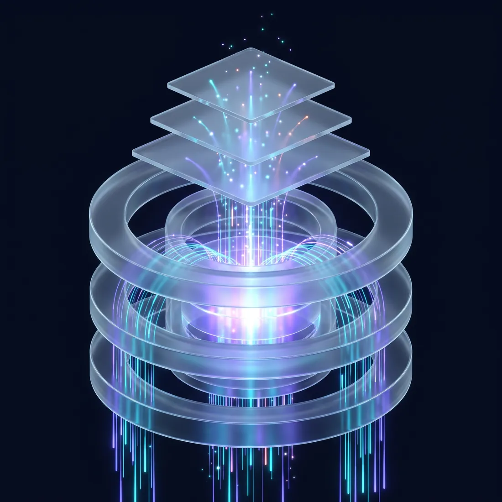

An interactive simulation · 30 Sep 2026
Tasks
get stuck in the pool,
see how podkit
can moves them.
Scroll through the pool as it grew, watch four tasks outrun their 8-hour scope, then run one task through podkit v2 and see it come out the other side as a submitted package.
About 3 minutes · no sign-in
01 · The problem
The pool, over time
Snapshot{{ poolDate }}
Pool size (17 Sep = 100){{ poolTotal }}
Discarded (same index){{ poolDisc }}
Never claimed{{ poolNever }}
The pile · 1 card ≈ 5 index points■ discarded■ never claimed
9×
more discarded tasks at the 27 Sep peak than on 17 Sep
2–3
trainers in turn picked up and dropped the same task
02 · The problem
8 hours vs reality
Machine run-time alone, before any human work. Hover or tap a lane for its history.
8 h scope
{{ l.name }}
{{ l.hLabel }}
{{ laneDetail.name }}
{{ laneDetail.hours }} machine time
{{ laneDetail.batteries }} batteries
{{ laneDetail.oracle }} oracle runs
{{ laneDetail.days }} calendar days
{{ laneDetail.qc }} QC rounds
03 · The problem
Why tasks get dropped
{{ t.title }}
{{ t.text }}
Examples are anonymised; no trainer names are shown.
04 · The simulation
One task, through podkit v2
Same task, same trainer. Flip the switch to compare what happens without podkit and with it.
Discard pile {{ discardPile }}
Submitted {{ submitted }}
{{ s.name }}
{{ s.status }}
live watcher●
{{ ln.text }}
local QC · 59 criteria{{ qcLabel }}
{{ resultText }}
05 · The solution
What's inside v2
Module
{{ activeNode.name }}
{{ activeNode.desc }}
103tools
6skills
141commits in 12 days
Under development: finalising and testing.
06 · The solution
Before and after, per pain
Before
With podkit v2
A dead container loses the whole battery
Per-trial resume: only the failed trial re-runs
QC findings arrive one per round
Caught locally, before upload
Docs written by hand
Generated at the accepted bar
Guesswork about what to do next
A navigator that names the next step
Tribal knowledge
A knowledge base every agent loads
07 · The vision
podkit v3, a data engine
01
Signal captureThe run, failure and fix data trainers produce locally today, and lose.
02
Plug-and-play MCP layerAny agent adopts podkit instantly.
03
Notifications and issue reportingProblems surface to the right person as they happen.

prediction guidance analysis management08 · For you
What each one gets
Delivery
Fewer discards, predictable throughput.
Discards · target for the pilot
−{{ youDiscards }}%
Program / Project
Live task state, pass-rate and time forecasts, a decision record.
QC rounds per task · target for the pilot
{{ youQc }}from up to 7
Pod lead
Onboarding in days, one standard, knowledge that stays.
Onboarding · target for the pilot
{{ youOnboard }}days
Trainer
The next step always named, no lost batteries, QC issues caught before upload.
Re-run after a dead container
1 trial
not the whole battery
Targets are proposals for the pilot and editable in the page's data block.
09 · The ask
Pilot podkit v2 with one pod for two weeks
Claim-to-submit
Discard rate
QC rounds per task
Acceptance rate
Hesham Aboul-Fetouhhesham.f1@turing.com